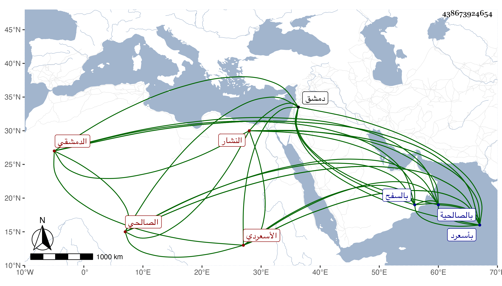

0902Sakhawi.DawLamic.ITO20230111-ara1.EIS1600.438673924654
Biography ID: 438673924654
419
محمد بن أبي بكر بن عبد الله بن جلال الدين وربما خفف فقيل جلال ابن شمس الدين الأسعردي الدمشقي الصالحي النشار بها ويعرف بابن الخياطة . ولد فيما أخبرني به في أول المحرم سنة سبع وسبعين وسبعمائة وقيل في التي بعدها بأسعرد وانتقل منها في صغره مع سلفه فقطن صالحية دمشق وسمع بها من أبي الهول الجزري وحدث سمع منه الفضلاء ولقيته بها فقرأت عليه بعض الأجزاء وكان قد تكسب بالنشارة وأذن بالخانقاه القلانسية مع كونه قيمها ثم أضر وشاخ وانقطع حتى مات في ربيع الأول سنة ست وستين بالصالحية وصلى عليه بالجامع المظفري ودفن بالسفح رحمه الله وقد ذكر لي أن لبعض سلفه مدرسة بأسعرد وذكر .
